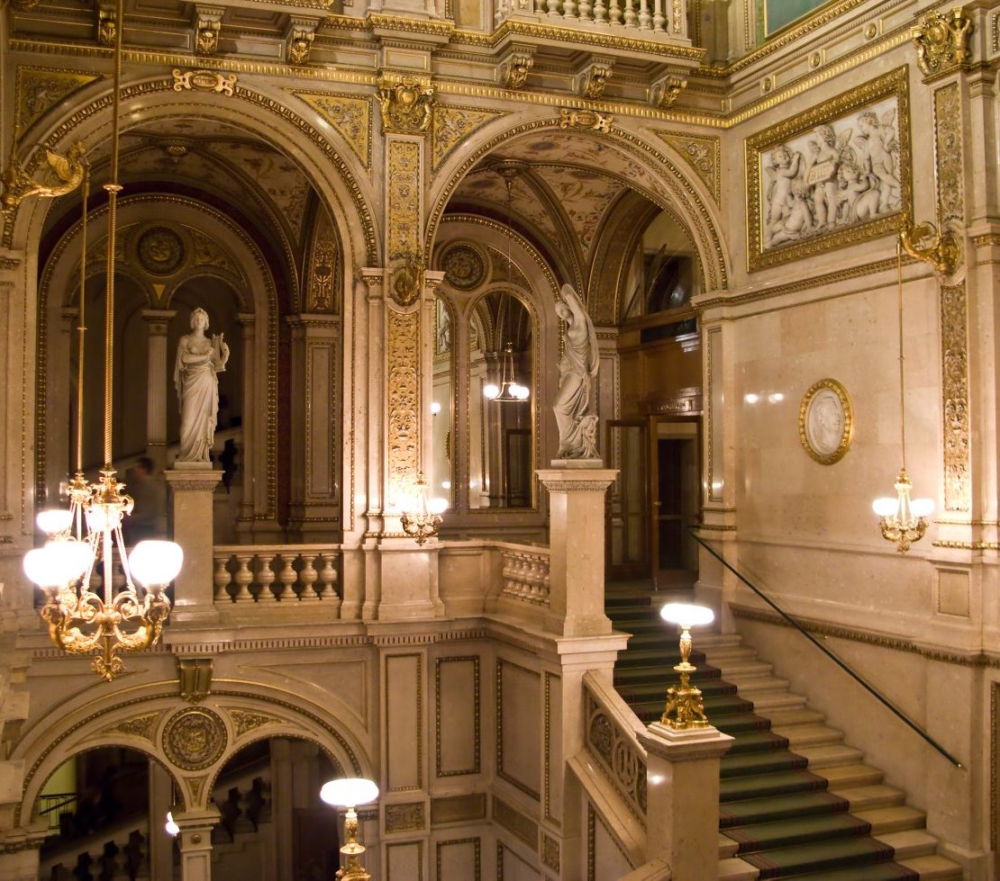

Адреса: Opernring 2, 1010 Wien, Австрія
Віденська державна опера
Віденська державна опера – найбільший оперний театр Австрії та світовий центр музичної культури. Його будівництво було завершено в 1869 році.
Віденську придворну оперу урочисто відкрили 25 травня 1869 оперою Моцарта «Дон Жуан». Після 1918 року вона стала іменуватися Віденської державної оперою. В даний час вона входить до п’ятірки найпопулярніших оперних театрів світу. Будівля Віденської опери воістину прекрасно. Його фасад прикрашали скульптури надзвичайно талановитого Ернста Хёнела. Це і картинки з «Чарівної флейти» Моцарта, і п’ять муз: Грація, Любов, Героїка, Комедія і Фантазія, які ще з часів стародавньої Греції уособлюють п’ять напрямків в мистецтві.